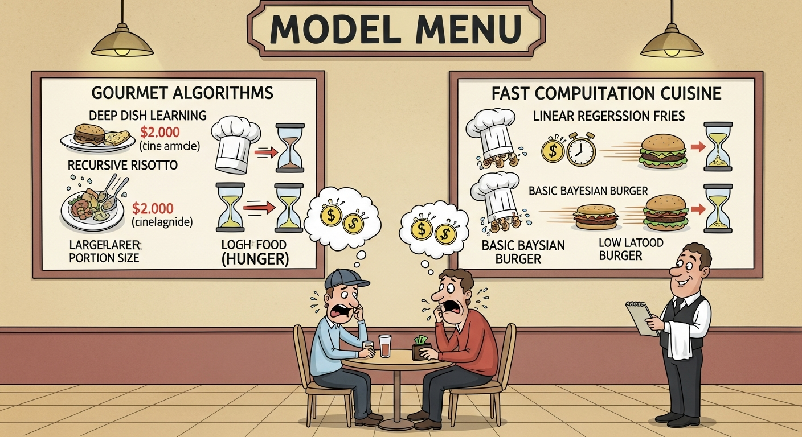

"An AI feature that generates $1 of value but costs $5 to run is not a feature. It is a cost center. Understanding unit economics is essential for sustainable AI products."
A Finance Partner Who Does the Math

Use vibe coding for rapid cost modeling experiments. Quickly prototype different routing strategies, test batching approaches, and explore caching patterns to see their actual cost impact. Vibe coding cost experiments lets you understand real unit economics rather than estimated ones, revealing optimization opportunities that theoretical models miss and invalidating assumptions that seemed obvious but do not hold in practice.
Cost optimization is measurable. Use vibe coding to quickly test different model routing strategies against your eval suite. Measure actual cost per request at different quality levels. This gives you evidence-based data for unit economics decisions rather than theoretical calculations that may not hold in practice.
Objective: Master cost modeling, latency optimization, and unit economics for AI features, so you can make informed decisions about where to invest, how to optimize, and which features truly pay for themselves.
Chapter Overview
This chapter covers the economics of AI products. You learn the cost drivers for AI inference, how to build cost models that capture all expenses, caching and batching strategies that improve efficiency, cost-aware routing that matches request complexity to model capability, and feature margin analysis that reveals which features are assets and which are liabilities.
Four Questions This Chapter Answers
- What are we trying to learn? How to understand the true unit economics of our AI features and make data-driven optimization decisions.
- What is the fastest prototype that could teach it? Building a cost model for one AI feature that captures all expenses (inference, engineering, failure handling) and calculates true cost per use.
- What would count as success or failure? Understanding whether each AI feature is a sustainable asset or a cost center that needs optimization or sunset.
- What engineering consequence follows from the result? Without cost modeling, teams make investment decisions based on capabilities without understanding economics, leading to unsustainable products.
Learning Objectives
- Build comprehensive cost models that capture all AI expenses
- Implement caching strategies that improve efficiency without sacrificing quality
- Apply batching techniques that reduce per-request overhead
- Design cost-aware routing that matches request complexity to model capability
- Calculate feature margin and ROI to prioritize optimization investments
- Make build/buy/optimize decisions based on economic analysis
Sections in This Chapter
The Economics Imperative
Every AI feature has a cost per use. The question is not whether to optimize cost, but whether the value delivered exceeds the cost incurred. Without cost modeling, you are flying blind. With it, you can make rational decisions about where to invest, what to optimize, and which features to sunset.
Role-Specific Lenses
For Product Managers
Unit economics determine whether your AI features are sustainable. Understanding cost per session, conversion impact, and feature margin helps you make the case for investment or the decision to optimize.
For Engineers
You implement the cost optimization infrastructure. Caching layers, batching strategies, routing logic, and optimization tooling are all engineering problems with direct cost impact.
For Designers
Cost considerations can inform design decisions. Features that minimize token usage without sacrificing utility are both cheaper and often better user experiences.
For Leaders
AI economics are the difference between sustainable AI and AI that burns capital. Understanding unit economics at the feature level enables rational portfolio management and investment prioritization.
Bibliography
Cost Optimization
-
Liu, H., et al. (2023). "Cost-Effective LLM Serving: A Survey." arXiv:2303.10425.
Comprehensive survey of techniques for reducing LLM serving costs while maintaining quality.
Unit Economics
-
a16z. (2024). "The Economics of AI: Understanding Unit Economics."
Industry perspective on why unit economics matter for AI companies and how to think about AI feature margins.